Kibana Guide: Field Statistics, Patterns and ES|QL in Discover
|
This content was generated with the assistance of AI and should be verified against the official documentation before being relied on in production. |
Checked on 2026-11-11 against Kibana 9.5.x.
What you build
You read the Bookshelf logs in Discover through two summaries, the statistics of every field and the patterns of the messages, then you switch Discover to ES|QL and build a query one command at a time. The last query counts the requests per minute, Discover suggests a line chart for it, and you save the chart on a new dashboard called Discover ES|QL (guides).
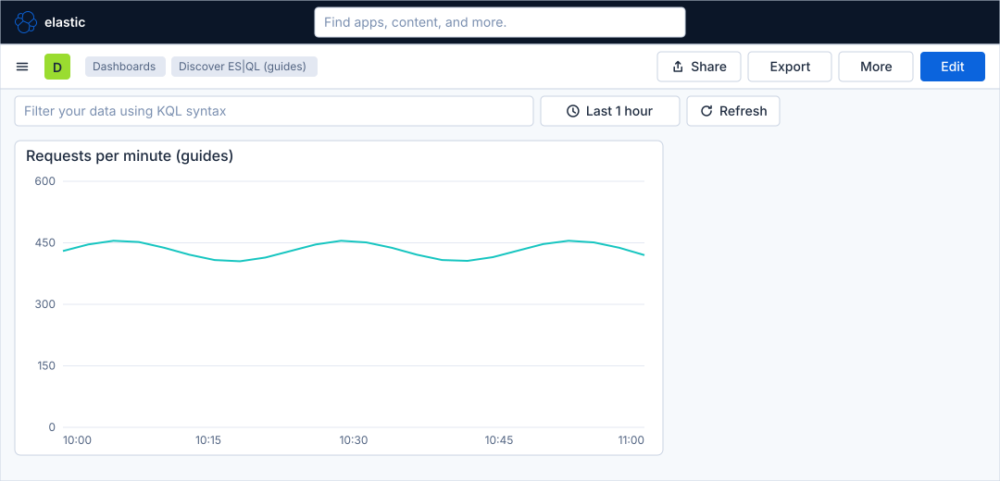
Before you start
-
Start the Kibana profile of the hands-on lab and wait about a minute:
cd lab docker compose --profile kibana up -d -
Open http://localhost:5601 and sign in as
elasticwith the passwordlab-elastic-password. When Kibana opens its full-screen welcome page, click Explore on my own. -
Do the previous guide, Explore logs in Discover, and the guide that creates the data view, Upload a file and create a data view. This guide needs the data view Bookshelf logs (guides), with the index pattern
logs-generic.otel-defaultand the time field@timestamp. -
The tabs Patterns and Field statistics of Discover are available with the trial licence that the lab runs. ES|QL needs no licence beyond the basic one.
-
The load generator sends traffic to the Bookshelf service in its default mode, which fills the log data stream.
-
The guide was checked on Elasticsearch and Kibana 9.5.6. The figures are drawings of the Kibana 9.5 user interface, not screenshots, so small details can differ from your screen, and the numbers in the tables are only illustrations. A highlighted box with a number marks the control of the step with the same number. The contents of the Field statistics and Patterns tabs, the ES|QL editor of Discover and the Edit visualization flyout were not opened one by one in the lab for this guide; the figures show them in general form and the steps name the controls without describing their exact layout.
Steps
Discover has a tab for the session, the buttons Share, Query in ES|QL, More and Save in the second bar, the data view picker and the time picker above the field list, a histogram and the results tabs Documents, Patterns and Field statistics. The figures below show the parts that this guide uses. The map of Discover is in Explore logs in Discover.
Read the field statistics and the patterns
-
Open the primary navigation with the menu button of the second bar and click Discover under Analytics.
-
Open the Data view picker above the field list and choose Bookshelf logs (guides). Set the time picker to Last 1 hour.
-
Click the tab Field statistics, next to Documents and Patterns.
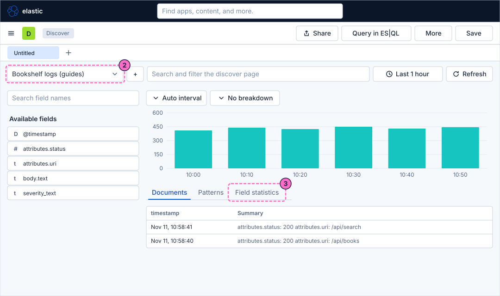
-
Find the row of the field
attributes.status. It shows in how many documents the field exists and how many distinct values it has, with a small chart of the most frequent values, so you see at a glance which statuses the service returns. -
Click the tab Patterns.
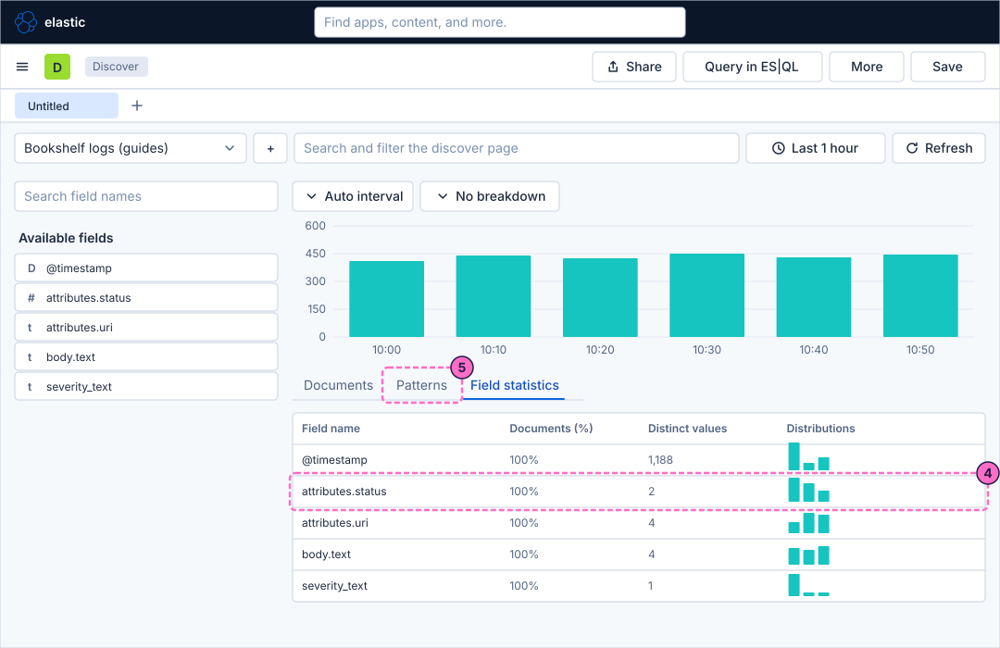
-
In the field selector of the tab, choose the text field
body.text. Discover groups the messages into patterns, in which the parts that change, such as a path, are replaced by a wildcard, and counts the documents of each pattern. -
Use the control of the first pattern row that filters the documents, to see only the documents of that pattern in Documents.
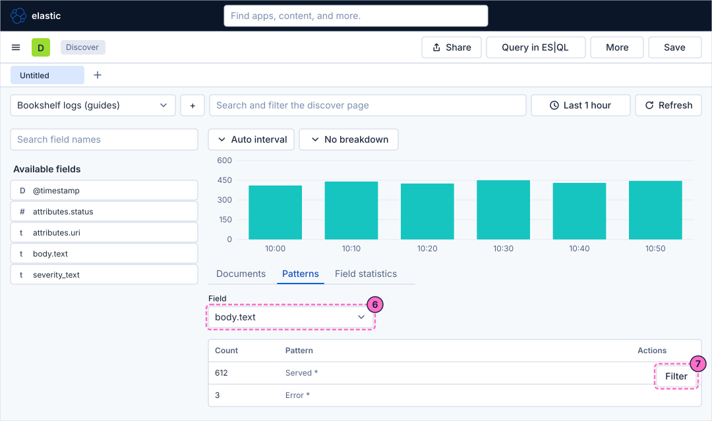
Switch Discover to ES|QL
-
Click Query in ES|QL in the second bar. Discover changes its classic mode, with the filter row and the field sidebar, for a query editor.
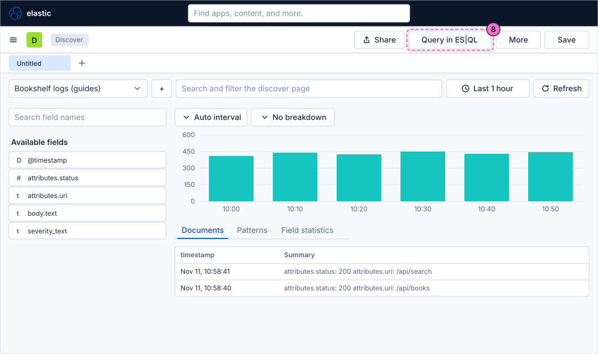
-
Click in the editor, select all its text and type a query that reads the documents of the data stream:
FROM logs-generic.otel-default -
Run the query with the keyboard shortcut Ctrl+Enter (Cmd+Enter on macOS) or with the run button of the editor. The results table lists the documents with all their fields.
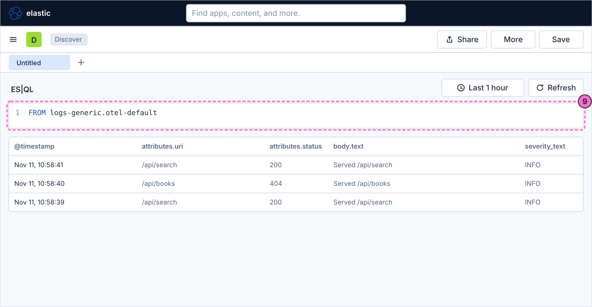
Build the query one command at a time
An ES|QL query is a pipeline: a source command, then commands joined with the pipe character, each one working on the table of the previous one. The time picker still limits the documents by @timestamp.
-
Add a new line and keep only the failed requests with the command
WHERE, then run the query:FROM logs-generic.otel-default | WHERE attributes.status >= 400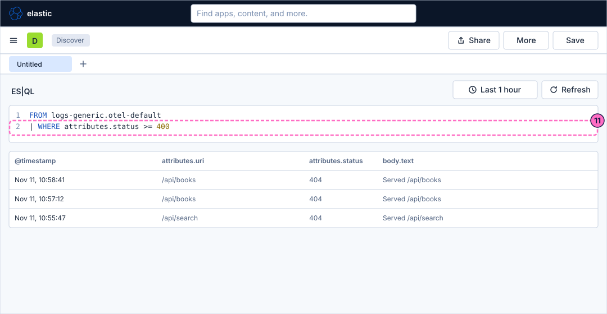
-
Add a line with the command
KEEPto leave only the columns you need:| KEEP @timestamp, attributes.uri, attributes.status, body.text -
Add a line with the command
SORTto show the newest documents first, and run the query:| SORT @timestamp DESC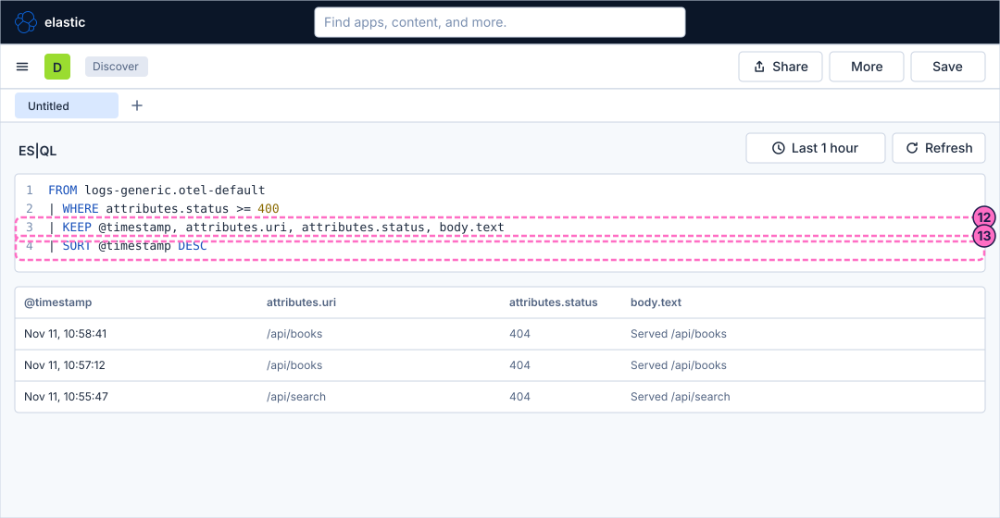
-
Replace all the lines by a query that aggregates with
STATS ... BY: the number of requests for each status. The table now has one row for each status, not one for each document.FROM logs-generic.otel-default | STATS requests = COUNT(*) BY attributes.status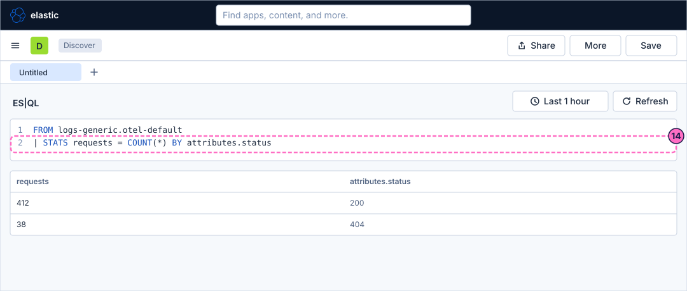
-
Replace the query by one that adds a computed column with
EVAL: for each URI, the total of requests, the failed ones and the percentage of failures, with the worst URI first.FROM logs-generic.otel-default | STATS total = COUNT(*), errors = COUNT(*) WHERE attributes.status >= 400 BY attributes.uri | EVAL error_pct = ROUND(100.0 * errors / total, 1) | SORT error_pct DESC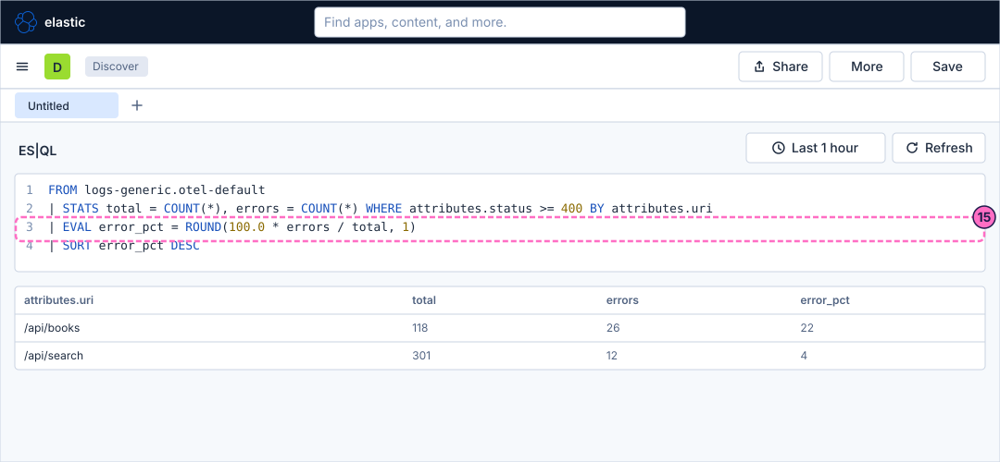
Look at the suggested chart
-
Replace the query by one that counts the requests for each minute, with the function
BUCKET, and run it:FROM logs-generic.otel-default | STATS requests = COUNT(*) BY minute = BUCKET(@timestamp, 1 minute) -
Discover draws a chart above the table for a query that aggregates, here a line of the requests over time. Click Edit visualization, at the right of the chart, to open the visualization editor and see the other chart types that Discover suggests for the result.
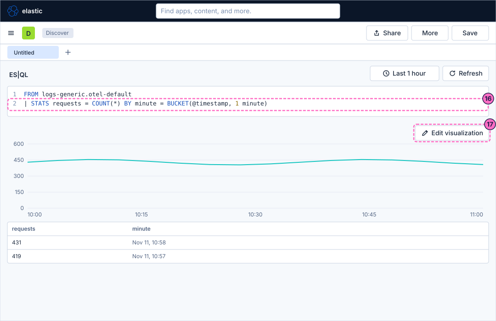
Save the chart on a dashboard
-
In the visualization editor, type
Requests per minute (guides)as the title of the chart. -
Click Save in the editor.
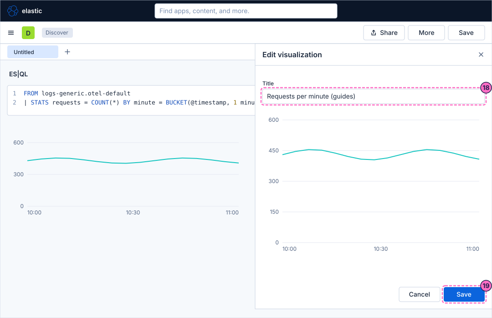
-
In the dialog that follows, choose to add the chart to a new dashboard.
-
Type
Discover ES|QL (guides)as the name of the dashboard and confirm. Kibana opens the dashboard with the chart on it.
Check the result
Open Dashboards and then Discover ES|QL (guides). It must show one line chart of the requests per minute. The chart comes from the query, so it needs no data view.
To see the chart react, force errors and press Refresh:
curl -X POST localhost:8090/mode/failingThe line stays high, because errors are requests too. To see the failures, run the query of the step with EVAL again in Discover: within about a minute the column error_pct grows. Restore normal traffic afterwards:
curl -X POST localhost:8090/mode/normalVariations
-
Replace the last line of the
WHEREquery by| WHERE severity_text == "ERROR"to filter on the severity instead of the status. -
In the table toolbar of Discover, Save table to dashboard puts the table of results on a dashboard, instead of a chart.
-
In classic mode, the query bar uses KQL; the querying page compares it with ES|QL.
What can go wrong
| Symptom | Cause | Fix |
|---|---|---|
The tabs Patterns and Field statistics are missing |
The licence of the cluster is basic and they need the trial or a paid licence. |
Use the lab as started by its compose file, which runs a trial licence, and restart the profile if you replaced the licence. |
The query ends with a red message about an unknown column |
A field name is mistyped, or a |
Check the names in the field list of classic mode, and keep the columns that later commands use. |
The table is empty |
The time picker covers Last 15 minutes or less and the load generator is stopped, or the lab started a moment ago. |
Widen the time picker to Last 1 hour, check the mode with |
There is no chart above the table |
The query returns documents, not an aggregation. |
End the query with |
The |
In the normal mode there may be no failed requests in the time range. |
Switch the load generator to its failing mode as in Check the result, or widen the time picker. |
Clean up
Keep the dashboard if you like; it is independent of the following guides, which create the dashboard Bookshelf (guides). To remove it, open Dashboards, select Discover ES|QL (guides) and delete it.
Stopping the profile with docker compose --profile kibana down -v deletes the volumes and therefore the dashboard too.
Where to go next
-
Previous guide: Explore logs in Discover.
-
Next guide: Create a dashboard and the first Lens panel, which builds a dashboard with the point-and-click editor.
-
Reference: Querying with KQL, ES|QL and PromQL covers the query languages in full, and Machine learning and AIOps covers the log pattern analysis behind the Patterns tab.